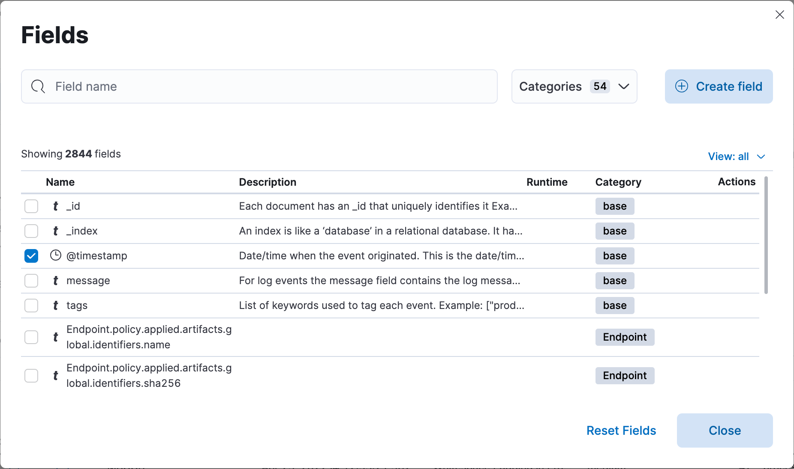
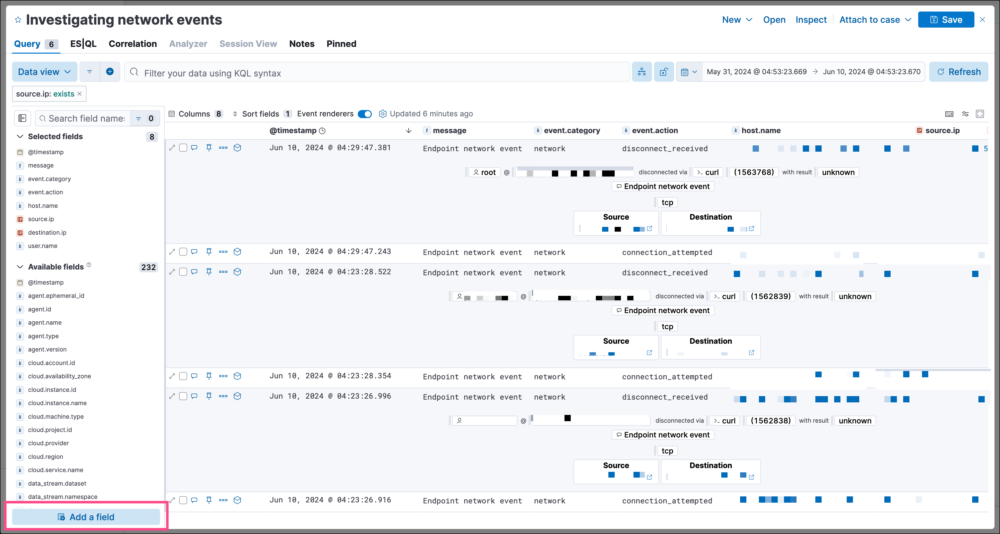

Create runtime fields in Elastic Security
editRuntime fields are fields that you can add to documents after you’ve ingested your data. For example, you could combine two fields and treat them as one, or perform calculations on existing data and use the result as a separate field. Runtime fields are evaluated when a query is run.
You can create a runtime field and add it to your detection alerts or events from any page that lists alerts or events in a data grid table, such as Alerts, Timelines, Hosts, and Users. Once created, the new field is added to the current data view and becomes available to all Elastic Security alerts and events in the data view.
Runtime fields can impact performance because they’re evaluated each time a query runs. Refer to Runtime fields for more information.
To create a runtime field:
- Go to a page that lists alerts or events (for example, Alerts or Timelines → Name of Timeline).
-
Do one of the following:
-
In the Alerts table, click the Fields toolbar button in the table’s upper-left. From the Fields browser, click Create field. The Create field flyout opens.
 -
In Timeline, go to the bottom of the sidebar, then click Add a field. The Create field flyout opens.

-
- Enter a Name for the new field.
- Select a Type for the field’s data type.
- Turn on the Set value toggle and enter a Painless script to define the field’s value. The script must match the selected Type. For more on adding fields and Painless scripting examples, refer to Explore your data with runtime fields.
- Use the Preview to help you build the script so it returns the expected field value.
-
Configure other field settings as needed.
Some runtime field settings, such as custom labels and display formats, might display differently in some areas of the Elastic Security UI.
- Click Save. The new field appears as a new column in the data grid.
Manage runtime fields
editYou can edit or delete existing runtime fields from the Alerts, Timelines, Hosts, and Users pages.
-
Click the Fields button to open the Fields browser, then search for the runtime field you want.
Click the Runtime column header twice to reorder the fields table with all runtime fields at the top.
- In the Actions column, select an option to edit or delete the runtime field.